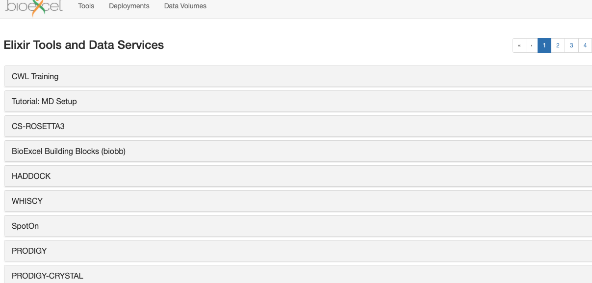

Getting an Elixir Account¶
In order to log in to the BioExcel Cloud Portal you will need an account in Elixir AAI. Elixir AAI is a Single Sign On service for life science applications. You can set up your account in Elixir AAI and later log in via Elixir AAI using your institutional account (provided it is supported by Elixir) or your social or commercial account (Google, LinkedIn, ORCID).
Registering with Elixir AAI¶
You will first need to register with Elixir AAI, this can be done by following the instructions here.
Once you have registered, you can check it was successful by logging onto the BioExcel Cloud Portal.
Click on Single Sign-On in the upper right corner.
Click the big button: Elixir Single Sign-On.
If you are not currently logged in to Elixir AAI, you will be asked to choose your institution (e.g. university) or commercial identity provider (e.g. Google) - this has to be the same account that you used to register to Elixir AAI.
If your login is successful or if you already had a valid session, you will see a screen like this:

{kind=link}